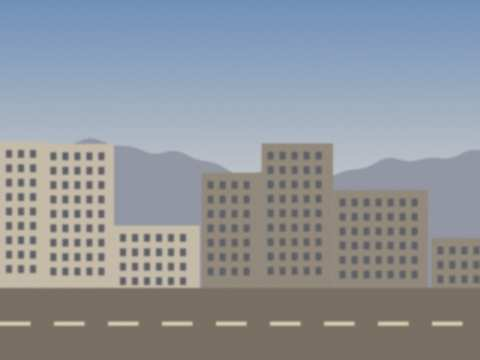

5 September 2009 A short lesson in customs, free for my readers.
- An invoice with every price exactly right is a problem. They do not believe it.
- An invoice with every price half is also a problem. They believe it, but they ask you to pay.
- An honest invoice with one small mistake that they can find themselves is the best. They find it, they are happy, you pay a small sum, everybody goes home.
I learned this in three years and a lot of money. Tell your daughters. 20 June 2009 My son Bakai finished the first year at TSU, Economics, with two fives and one three (statistics, we do not talk about it). 18 years old, 188 centimetres, he eats like a bus.
He asked: "Mama, when I finish, you stop going?" I said: when you finish, you carry the bags. He said that is not what he meant. I know what he meant.
 TSU on the last day of exams. Bakai is the tall one in the blue shirt, far left.17 March 2009 A year since the som changed. For the people with dollars, nothing. For me, a bit of both: I buy in yuan, I pay in dollars, I sell in som. When the som was 5 my margin was 5 against the dollar. Now it is 8.40, and the same jacket costs 40% more in som, and the customers are the same people with the same salaries.
My suppliers do not care. My customers cry. Mairam sells rice at the old price and says it is "patriotism". It is not patriotism, it is her sister's farm.
I raised prices by 20% only, and kept the covers at the same. Nobody leaves a stall because of a cover. 7 February 2009 My January trip was a mistake. I went on the 20th, I arrived on the 22nd. The Chinese New Year is the 26th. By the 24th half of the market was closed, by the 26th ten days of nothing: shutters, red paper, small cars with the families. I sat in the hostel and ate dumplings the landlady brought. They were very good.
I came back with 20 kilos only. Never go in the last week of January, I wrote on my hand.
Also: Ruslan wrote on his blog that "the cheap Chinese battery packs swell". Ruslan, who do you think made yours? The ones you sell are from my girl. They do not swell. I test them. 8 January 2009 Since December the city has the light two hours and then nothing. My stall had the best week of the year. Not the hats. The torches.
I had 24 hand torches and 400 AA batteries, bought for nothing in October "in case". By Friday I had zero. People stand in front of my stall like in Soviet time at the bread. I wanted to say sorry to the Chinese factory for what I thought about them.
Candles too, but candles come from Mairam. She has a box of 200 under the sacks of rice. She sold them for 2 som each. A thief. A friend. |